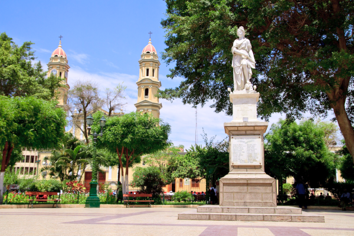
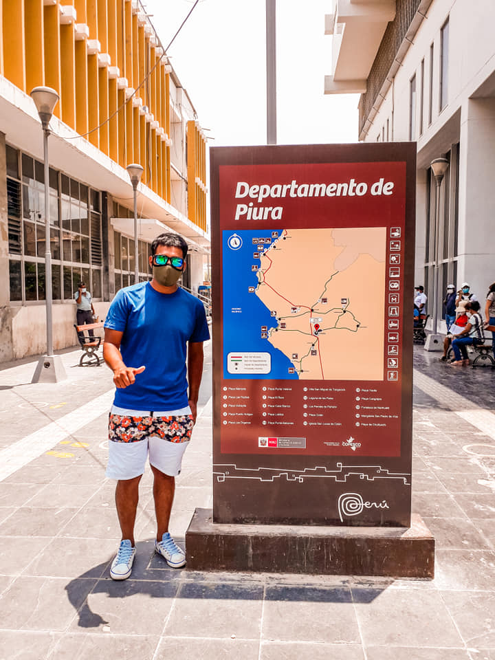
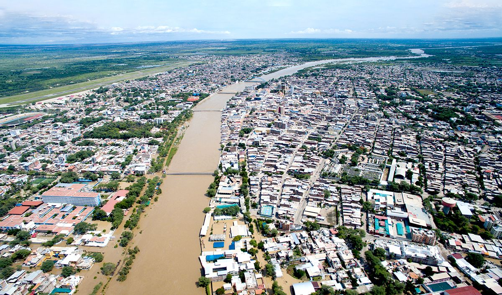
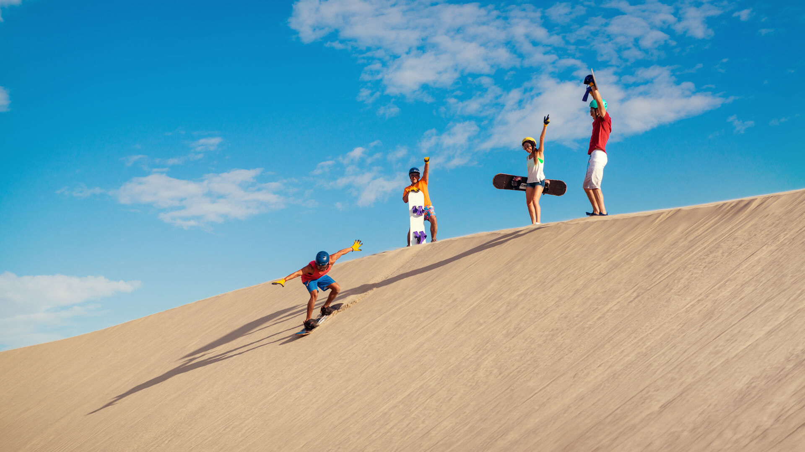
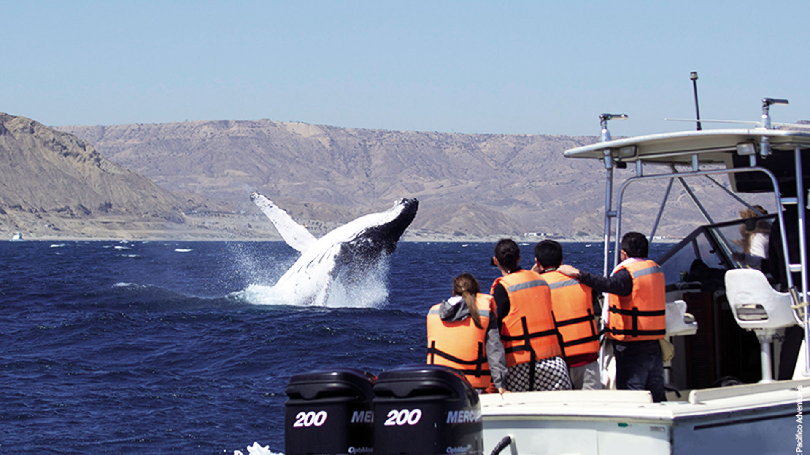
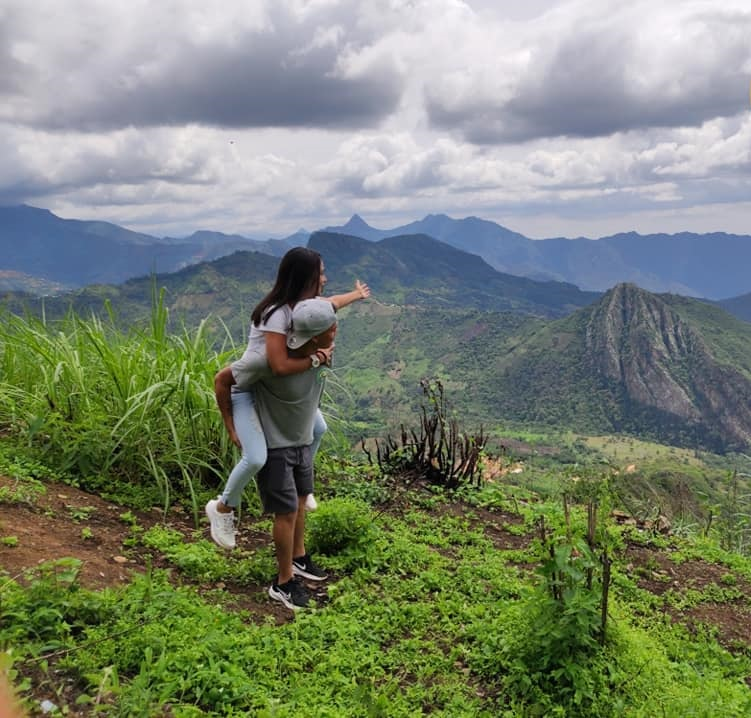
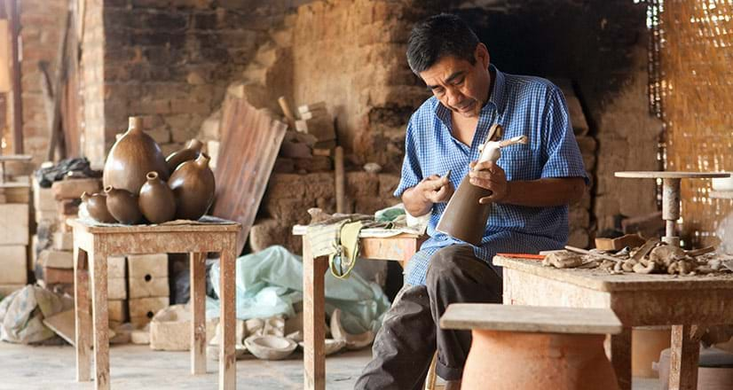

Piura (fundada como San Miguel de Piura) es una ciudad del norte de la zona occidental del Perú, capital del Departamento de Piura. Piura es la primera ciudad fundada por los españoles en Sudamérica en el año 1532, conocida también como feria de integración Fronteriza Peruano-Ecuatoriana. El nombre de Piura deriva de la palabra quechua "Pirhua" que significa granero o depósito de abastecimiento. En tiempos remotos Piura era una base de abastecimiento de los pobladores quechuas. La ciudad se convirtió entre 1535 y 1570 en un núcleo de cierta relevancia que acogió a visitantes ilustres y pudo ensayar una planificación urbana completa. La ciudad tuvo Iglesia Matriz, Convento de Mercedarios y Casas del Cabildo, alcanzando hacia mediados del siglo XVI un centenar de vecinos.
Destinos

Plaza de Armas

Centro de Piura

Piura desde Arriba

Sechura

Paita

Canchaque

Chulucanas
 El Ñuro
El Ñuro